Imaging Process
Visualization of Axes Mapping
In our system we essentially have 5 different translation stages at work: the standard x,y, and z axes, an additional stage along the z axis to control the focus of the detection path (f), and and axis associated with the piezo positioned such that its normal is 60.5 degrees away from the y-axis.
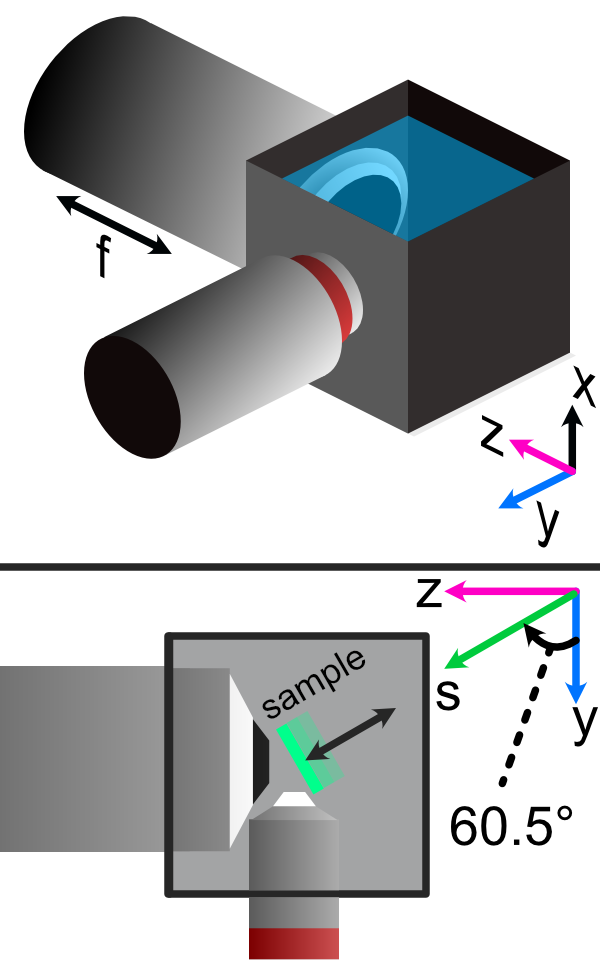Finding the Focus
Minimizing Spherical Aberrations
Once the system has been assembled to the point of being able to take image stacks, the process of minimizing the effects of spherical aberrations can begin. Spherical aberrations are typically introduced into optical systems due to the surface curvature of different lens elements. This type of aberration typically presents itself visually as a sort of stretching or bending of the focus of light in the system. Certain microscope objectives, such as the Nikon 25x/1.1 NA that we employ in this setup, have a built-in collar that can be adjusted to minimize spherical aberration (PICTURE).
In our system, we expect the effects of spherical aberrations to be along the axis of our detection path (defined as z in our imaging scheme). In order to visualize these effects and adjust the correction collar of our objective to mitigate them, we employ a process of taking a z-stack of fluorescent beads suspended in agarose and using ImageJ to quickly process those images.
Take a z-stack within Navigate of your sample
Open up the z-stack within ImageJ
Reslice the z-stack (Image -> Stacks -> Reslice)
Do a maximum intensity project of the resliced stack (Image -> Stacks -> Z-Projection)
Take note if spherical aberration is present in the projected image.
If spherical aberration is still present, make slight adjustments to the objective correction collar and repeat Steps 1-5.
As a note, observing the camera live-feed via Navigate’s “Continuous Scan” mode while adjusting the correction collar can help to get in the general vicinity of the correct placement of the correction collar. An example of how change in the correction collar affect live images are shown below for fluorescent beads. Aiming to get to get the beads near the expected light sheet position to be as in-focus as possible is a general guide for what direction to move the collar; however, true correction needs to be done with the z-projection method mentioned above.
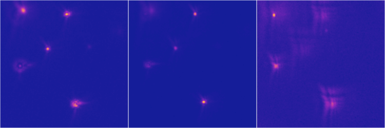As a quick example of what an image of a z-projection could look like before and after trying to correct for spherical aberration is shown below. Here, one can see in the top panel that the bead features are essentially smoothed out and fuzzy due to aberrations, while in the bottom panel with adjustments made to the correction collar the beads appear much cleaner and focused.
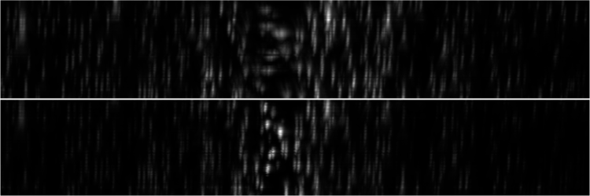Image Stack Processing
Deskewing
With an image stack acquired, some post processing is still required in order to remove the effects of shearing in our images. The root of this shearing is due to the angled method in which our sample is mounted and similarly, the angled path that the sample moves as the piezo is scanned. A basic visual idea of how deskewing affects the resulting image is shown below for 100 nm fluorescent beads. Here before deskewing for the same image plane (yz), the beads appear to be stacked in a straight line but oriented along an angle, which is not the most accurate representation of our system. On the deskewed image on the right, one can see that the beads are now properly angled correspond to our piezo angle mount, and that the PSFs of the beads is now correctly aligned along the z axis.
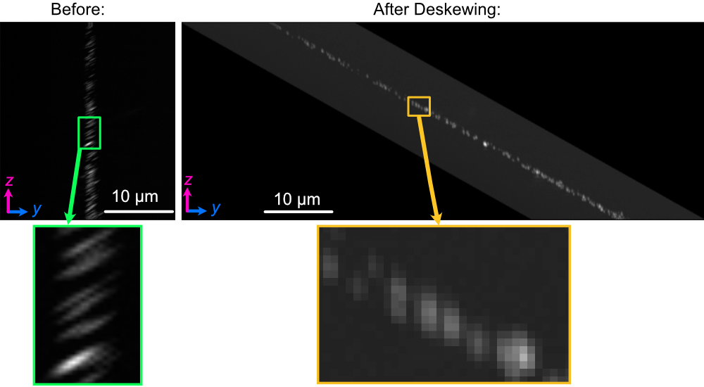To do this deskew processing, we utilize custom-built python code via Jupyter notebooks (HAVE LINK TO NOTEBOOK DOWNLOAD?). The user needs to provide the correct file path to the .tif image stack collected via navigate, as well as the parameters of the imaging system like z-step size, xy pixel size, and the angle that the images should be deskewed over. In our case, our deskew angle is equivalent to 90-60.5 degrees, where 60.5 degrees corresponds to the difference between the normal of our angle mount and the y-axis. If this value is unknown, one can use different values for the deskew angle until the bead PSFs are correctly aligned along the z-axis and not angled.
Rescaling
With a properly deskewed image set, the next step is to work to rescale the image set dimensions to properly represent the physical pixel sizes in every dimension. The first step to doing this involves going to the properties tab of the image stack (Image-> Properties) and adjusting each dimension such that the x and y values correspond to the xy pixel size based on the system magnification and camera sensor size, and the z value corresponding to the z step size as an effective z pixel size. While using our angled piezo configuration, the z step size \(\delta_z\) doesn’t directly correspond to the step size chosen for the piezo via navigate. Depicted graphically below, the actual z step size is related to both the angle for the piezo and the piezo step size \(\delta _p\) .
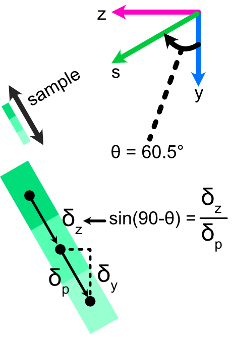An example of what these values can be is shown below, where for our camera and system magnification our xy pixel size is the same at 130 nm, while we used a piezo step size of 200 nm in Navigate. Using the relationship shown above to find \(\delta _z\), we find our actual z-step size is roughly 98.5 nm. Then we can adjust the image stack properties panel as follows:
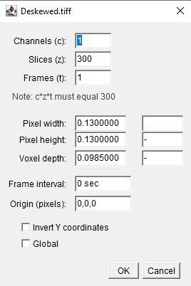With the properties panel adjusted, the next step is to open the rescaling panel in ImageJ (Image-> Scale). In this panel, the relative ratios of each of the pixel sizes to each other needs to be established. As an example for our system, our x and y pixel sizes are the same at 130 nm and our z-step size \(\delta _z\) is 98.5 nm. The ratio between these values is roughly 0.757, so our rescaling panel looks like the following:
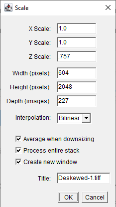After selecting OK, ImageJ will then rescale the dimensions of the image stack relative to the values entered in the rescaling panel. In our case, there would be no adjustments to x or y, but z would be rescaled from it’s original value.
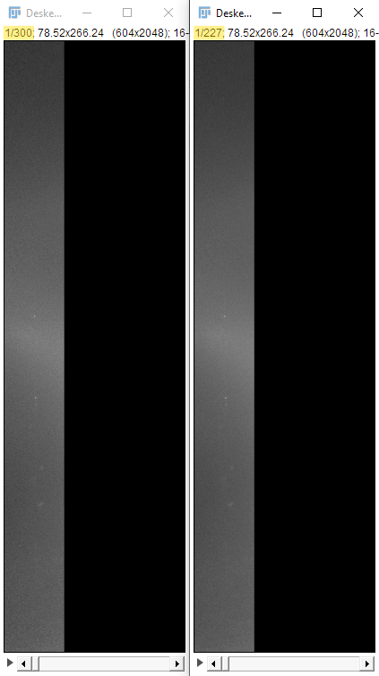Reslicing
Reslicing in ImageJ is a process that allows one to be able to reconstruct different planes of a 3D image set. In other words, it allows one to view the XY, XZ, and YZ projections of the same image set. In our system, our default viewing plane is the XY plane, and so we reslice to observe the XZ and YZ planes. The reslicing process within ImageJ is done after deskewing and rescaling, and involves opening up the Reslicing panel (Image-> Stacks-> Reslice). Within this panel, one just needs to select the direction of the reslice (typically just top or left). For our system, top slicing provides us with the YZ plane view where one can observe the angled orientation of our sample setup after projection (Image-> Stacks-> Z Project). This is shown below for the same 100 nm bead samples used in the Deskewing and Rescaling portions of this page.
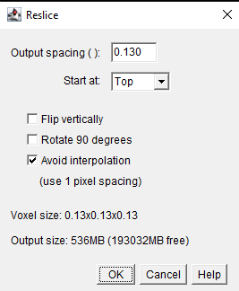 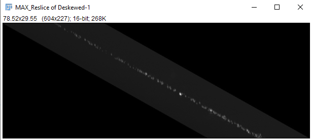The same process can then be done to obtain the XZ plane view of our sample by reslicing left instead:
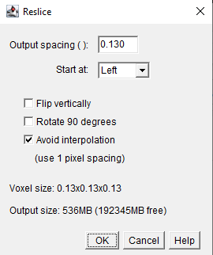 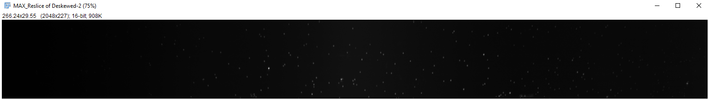